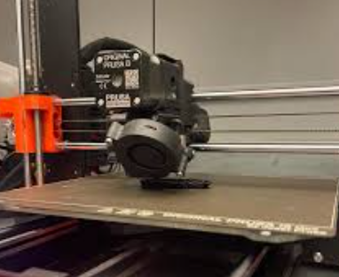
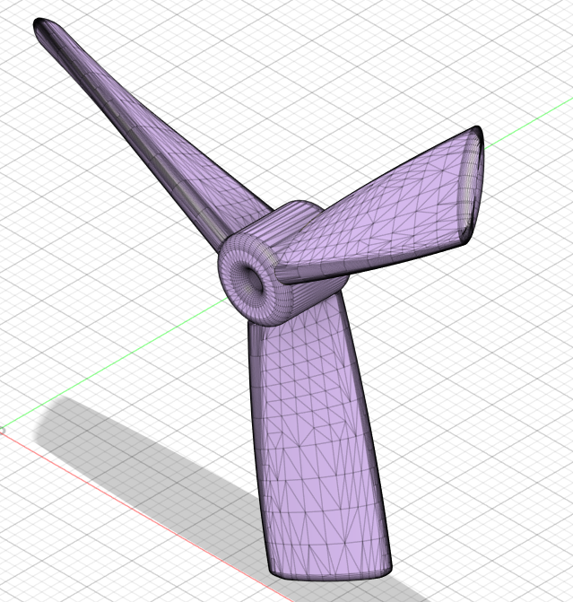

Drones have been a fundamental component in the advancement of aerial autonomy. Over time, we have seen drones be developed and utilized for both simple and high production scenarios, all the way from a simple toy to an advanced camera for large-scale projects. In light of this fact, we aim to produce a cutting-edge drone platform capable of autonomous launch, landing, and recharging, further redefining the capabilities of drones.
Guided by a commitment to excellence, safety, and sustainability, we strive to revolutionize industries, empower communities, and inspire the next generation of engineering pioneers
As we embark on this journey, we envision not just a senior design project, but a foundation for future endeavors, driving progress and shaping the landscape of autonomous technologies.
Having history that dates back to the early 1900's, the development of drones has advanced dramatically. Widely used for military operations, drones were able to provide great strategic advantages and change the tide of a given conflict. Today, drones are extremely technical when compared to their predecessors, allowing them to be used in a plethora of different scenarios. This being the case, we wish to push the boundaries of drones and implement them in ways that would prove to be extremely useful in both everyday and high-risk scenarios. In doing so, we'll be able to make further improvements and innovations so as to not only aid society, but further the implementation of drones and drive innovation further.
Budget: besides the general cost for certain components, we must also take into account the amount of filament used for 3D printing as well as the type of filament.
3D printing: most of the team doesn't have access to a 3D printer at home, so they must reserve printing time in the I2P lab at CSU to be able to test drone designs, which can be fairly limited at times.
Ordering components: we must take into account the source of any component purchased that's to be delivered, as it can sometimes take longer to anticipate, causing timeframe issues.
Although the main objective is to produce an autonomous drone, there are multiple steps that we're taking to ensure the drone's efficiency and practicality:
Data Conscious: ensuring the drone has pre-defined data allows it to perform tasks in an efficient manner.
Precise Drone Control: a combination of predetermined start/stop points, movement commands, and remote drone/camera control will allow us to pinpoint the drone's movements and get a better perspective of how to properly execute tasks.
Efficient Internals: ensuring the drone is compatable and is able to charge at a reasonable speed is crucial as it allows us to improve the drone's accessibility.
Sound Design: a large component of this project is designing the drone in Fusion360, so ensuring every components properly designed and compatible with eachother is crucial.
